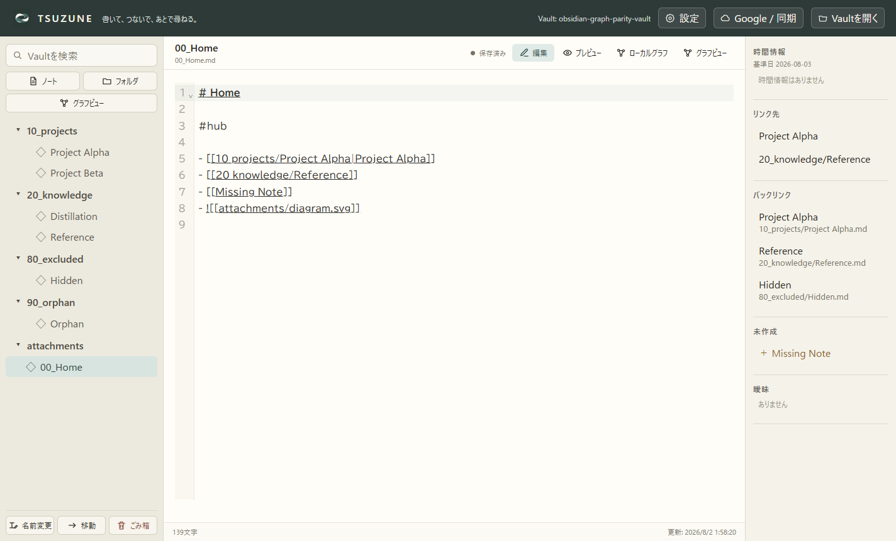
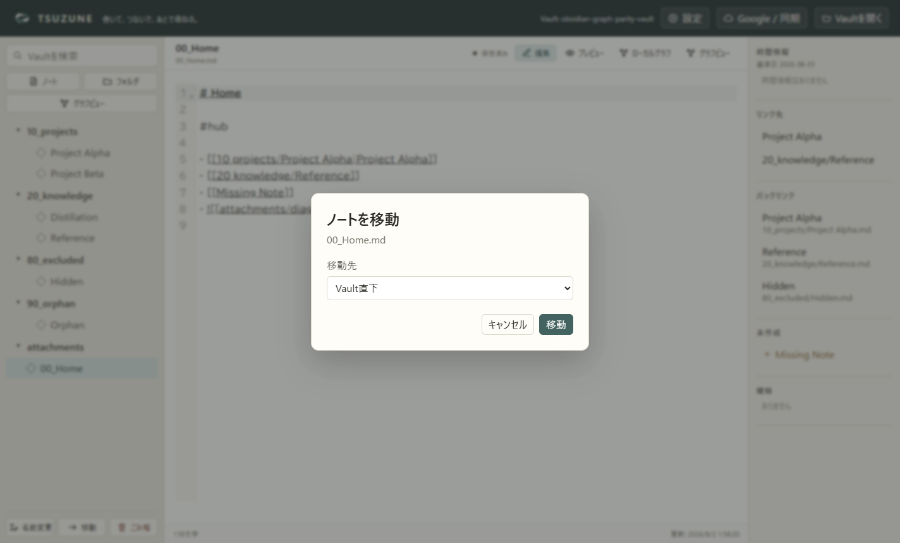
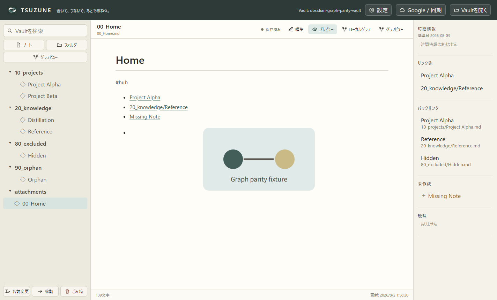

外部変更をバッチ処理
Drive同期や一括取込でファイルイベントが連続しても、100msのバーストごとにVaultを一度だけ再走査する。同じパスの通知は最新状態へまとめ、編集中ノートの競合確認と、外部エディタによるunlink→add形式のファイル置換も維持する。
静かな知識工房として、入力・保存・移動・検索を軽くし、Windowsアプリとしての顔と操作規則を揃えた最適化記録。
日常利用の中心動線を、見た目と動作の両面から改善した。 外部変更の連続通知は一度にまとめ、入力中はVault全体の検索・バックリンク・時間情報を毎キー再計算しない。専用マーク、線アイコン、保存状態、レスポンシブ表示、移動ダイアログのキーボード操作も同じ区切りで整えた。
Drive同期や一括取込でファイルイベントが連続しても、100msのバーストごとにVaultを一度だけ再走査する。同じパスの通知は最新状態へまとめ、編集中ノートの競合確認と、外部エディタによるunlink→add形式のファイル置換も維持する。
編集中のリンク先は即時表示する一方、検索・バックリンク・時間情報は保存済みsnapshotを参照する。自動保存後に確定状態が更新されるため、打鍵のたびに全Markdownを解析しない。
Ctrl+KでVault検索へ直接移動する。既存データ構造や保存形式は変えず、毎日の移動距離だけを短くした。
3つのノートを一本の糸で結ぶthread-and-node markを、ヘッダー、起動、空状態、Windowsビルドで共用する。色はWorkshop Night、Thread Teal、Paperに固定した。
検索、作成、同期、表示切替、移動、ごみ箱などを同じ線幅のアイコンへ統一。ラベルは残し、意味をアイコンだけに依存させない。
固定3列の破綻を減らし、1120pxと900pxを境に右情報欄とファイル欄を調整する。Electronの最小ウィンドウ寸法も現実的な値へ下げた。
![[attachments/diagram.svg]]のような埋め込み画像をプレビューへ表示する。Rendererはファイルへ直接触れず、Main側がVault内の対応画像だけを検証して読み込む。通常のMarkdown画像URLは既存の表示経路を保つ。



| 移動ダイアログ | role="dialog"、aria-modal、説明関連付け、Escape、フォーカストラップ、フォーカス復帰を実装。 |
|---|---|
| 背景操作 | 移動・設定・Googleのモーダル表示中はworkspaceをinertにする。 |
| 状態通知 | 保存状態へrole="status"とaria-liveを付与し、表示切替へaria-pressedを付与。 |
| 動きを減らす設定 | prefers-reduced-motionで不要なトランジションとアニメーションを止める。 |
| 検索ヒントのコントラスト | Paper背景に対するplaceholderを#777267へ変更し、コントラスト比4.71:1を確保。 |
| 添付画像 | Vault asset経路だけを専用readerへ送り、画像拡張子、Vault境界、シンボリックリンク境界をMain側で検証する。通常のMarkdown画像URLは専用readerへ送らない。 |
| データ境界 | 保存形式、Vaultパス、Markdown原本、競合確認、atomic saveの既存契約を変更していない。 |
| 型検査 | PASS — npm run typecheck |
|---|---|
| 対象回帰 | PASS — 4 files / 60 tests |
| 全体回帰 | PASS — 44 files / 356 tests |
| 本番更新 | PASS — silent install後にapp.asar cacheを破棄して、置換後bundleを再検証 |
| Watcher負荷 | PASS — 20 events / 1 snapshot refresh / selected note updated |
| ビルド | PASS — npm run build |
| Electron capture | PASS — mark detected / 14 icons / focus SELECT / background inert / embedded image ready |
| 使用Vault | 隔離fixture fixtures/obsidian-graph-parity-vault。本番VaultのMarkdownは画面取得で変更していない。 |